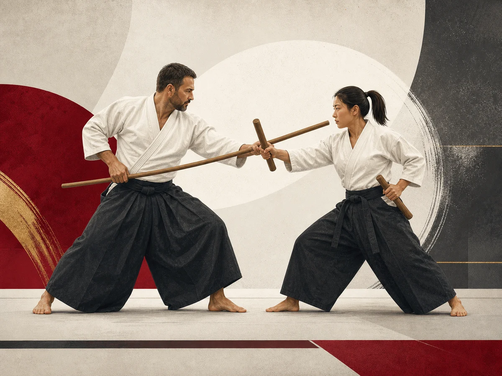

Sens du terme
Le site officiel explique le terme à partir de trois caractères : ko pour ancien, bu pour martial et do pour la voie.
Pratique représentée
La page officielle WUKF France présente le kobudo comme une pratique liée aux armes associées aux arts martiaux japonais.
Voir la source officielle
Le site officiel explique le terme à partir de trois caractères : ko pour ancien, bu pour martial et do pour la voie.
L’acception moderne indiquée recouvre les pratiques d’armes associées aux arts martiaux japonais.
Plusieurs rubriques de la page officielle sont encore indiquées comme en cours.